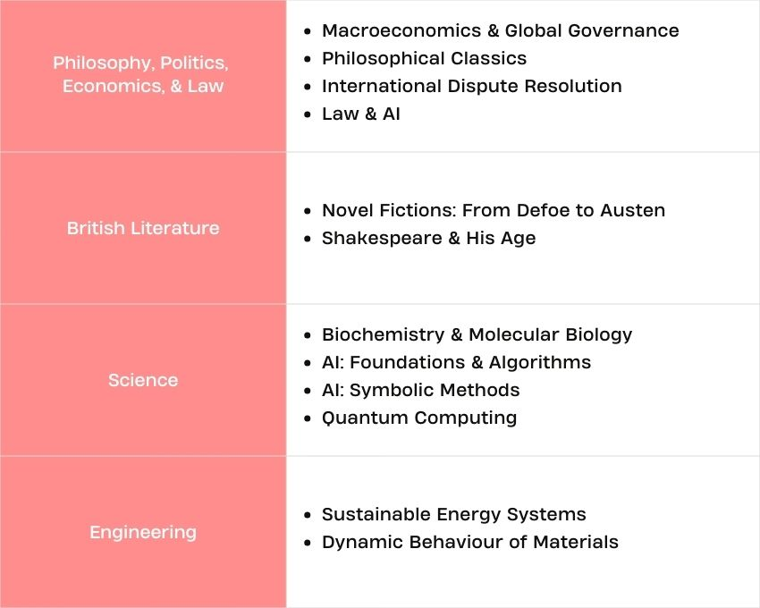

教务处 · 教学通知
项目发布 | “大川视界”2026年牛津大学奥利尔学院700周年院庆暨暑假学分课程项目
发布时间：2026-03-12
为适应高等教育国际化的新趋势，提升学生国际视野，推进我校人才培养国际化战略，学校现启动选派本科生和研究生赴英国参加“牛津大学奥利尔学院700周年院庆暨2026年暑假学分课程项目”的工作。为保证此项工作的顺利进行，现就有关事项通知如下： 一、学院和项目简介 Oriel College （奥利尔学院）于1326年由英格兰国王爱德华二世建立， 2026年正值学院700周年院庆 ，是牛津大学历史最悠久的学院之一。学院与皇室有着不解的渊源，是牛津最古老的皇家学院，位于牛津城市中心，交通和生活极为便利。 The Oriel Summer Institute 由牛津大学奥利尔学院举办，课程设置与教学实施均由学院直接负责，面向全球优秀学生招生。项目学制为2–4周，学生可根据个人学习计划修读1–2门课程。 课程由牛津大学奥利尔学院学术委员会（Advisory Panel）督导，所有授课教师均来自牛津大学，采用严谨的教学模式。完成学习并通过考核后，学生将获得由奥利尔学院院董（Fellow）签发的官方结业证书及成绩单。 课程官网 ： https://summerinstitute.oriel.ox.ac.uk/ 同时，为配合课程学习，提高学员在世界顶尖学府的沉浸式体验，项目组织学生赴伦敦、巴斯及牛津周边文化小镇进行文化考察和体验，带领学生参加牛津传统活动，沉浸式探究英国文化及牛津特色，全方位解读牛津及其学术文化底蕴，丰富学习内容。 更多项目详情请见附件。 二、项目时间 第 一 期：7月19日-8月1日； 第二期：8月2日-8月15日 * 每门课2周，考核合格可获得 官方结业证书与成绩单，以及 4 个欧洲学分 (ECTS) ( 等于2个美国学分 US Credits) 。学生可自主选择参加某一期或选择参加全部两期。 三、可选课程 请关注项目官网获取最新课程开设信息。 四、项目费用 本项目向我校学生提供专项学费优惠： 一期（2周） 两期（4周） 选择单人间独立卫浴：4480英镑 免费升级单人间独立卫浴： 8630 英镑 选择单人间公共卫浴：4265英镑 每两周费用包含 ：40小时课程学费及课程相关学术活动费用；牛津当地活动及周末一日游；住宿费（单人间）；餐费（工作日提供三餐，周末提供早餐）；欢迎酒会及毕业正式晚宴；官方结业证书与成绩单；24小时学院管理与生活支持；伦敦机场接送机（须符合条件）。 费用不包含： 国际旅费、签证费、保险费、在英国期间其他个人消费。 五、申请要求： 1 ．热爱祖国、品德优良；遵章守纪，无纪律处分； 2 ．我校全日制在校非毕业年级本科生和研究生（含博士生），专业不限（出发前须年满18周岁）； 3 ．英语要求：全英语学习专业可免除语言证明；雅思≥6.5分; 托福ibt≥90分；四级≥550分；六级≥530分；高考英语≥130分（大一学生）或同等英语水平 。 4 ．综合素质较高，具备开放包容的交流心态和团队合作精神；身心健康，具有海外独立生活能力和抗压能力； 5 ．学生在国外学习期间，应尊重当地风俗，遵守双方的法律法规和规章制度，愿意服从双方学校的统一管理。 六、报名时间、方式及流程 （一）校内申请时间：即日起至3月29日（学院审核截止日期为3月30日中午12点） （二）校内申请流程： 1. 本科生登录教务处国内国际合作交流管理系统 http://jxyw.scu.edu.cn:8081/gjjl/ ， 选择 相应项目进行在线申请。 特别提醒： （1）请下载登录界面操作手册后进行操作，若遇技术问题，可打电话13183867686 或QQ：1134372115咨询。 （2）为实现项目报名工作流程化、信息化，学院、学校将通过系统完成项目审批（报名学生无需再交纸质材料），请学生在线报名后及时告知学院教务办，请学院相关人员在系统中于截止日期前完成学院审核。 （3）川大所修课程中文成绩以系统计算为准。若有疑问，请持成绩单原件与教务处合作与交流科联系。 2. 研究生在研究生院申请： （1）申请人：登录四川大学研究生管理系统——国际学术交流申请应用，选择“寒暑假访学项目申请”，选择相应的访学项目，填写申请，提交并打印出纸质《申请表》，将纸质《申请表》递交导师、学院审核，附上合格的、有效期内的语言成绩。 （2）导师：登录四川大学研究生管理系统——国际学术交流应用，在“寒暑假访学项目”中审核并在纸质版《申请表》上签署意见、签字。 （3）学院：学院研究生教务老师登录四川大学研究生管理系统——国际学术交流应用，在“寒暑假访学项目”中审核，并由学院主管领导在纸质版《申请表》上签署意见、签字、盖公章。 （4）学院审核后，纸质《申请表》以学院为单位报研究生院3-325培养办公室。 （5）申请人回国后，登录四川大学研究生管理系统——国际学术交流应用，在“寒暑假访学项目”申请页面中填写并提交回国总结及以下材料： ①回校证明（包含项目名称、访学开始和结束时间并由辅导员老师签字） ②官方颁发的项目证书或成绩单 （三）校内报名截止后，请在三个工作日内查收电子邮件，加入微信群，后续事宜将在群里通知。只在外方院校报名而未在校内报名的同学将不能申请大川资助和进行学分转换。 七、特别提醒 （一）为保障出行安全，至少8人成团。如报名人数少于8人，项目则取消。 （二）为保证出行顺利，请在报名成功后及时告知学院辅导员，并在出境前登录四川大学学生出国（境）网上备案系统完成备案，流程见 https://global.scu.edu.cn/?channel/490/504/564/595 。未完成备案的同学将不能申请资助和进行学分转换。 （三）护照和签证办理：报名期间可先同步办理护照。待报名缴费成功后持护照和录取函办理英签。 八、咨询： 国际合作与交流处 85401551（项目咨询） 教务处合作交流科 85402398 （本科生报名咨询） 研究生院培养办 85405146 （研究生报名咨询） 外方院校课程咨询： summerinstitute@oriel.ox.ac.uk 或加入课程咨询QQ群，由课程方负责老师进行答疑。 附件： The Oriel Summer Institute Brochure 2026 <!--
